A tymczasem w Cameracie...
.
2015-09-05
Koncert w kampusie wielickim podczas jubileuszowego wernisażu Józefa Kowalczyka, wielickiego rzeźbiarza oraz wielkiego fana naszego chóru, więc sami rozumiecie, że nie może nas tutaj zabraknąć.Zaczynamy od krótkiej próby w sali koncertowej kampusu, przy „fortepianie” Małgorzata Westrych.
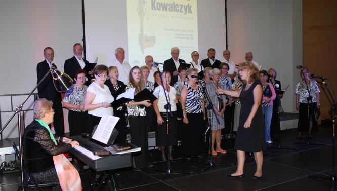
Chwila odpoczynku przed koncertem.
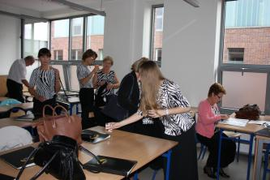 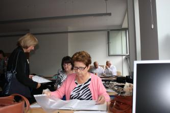
Zaproszeni goście wypełniają salę. Lusi trzyma kwiaty dla Jubilata.
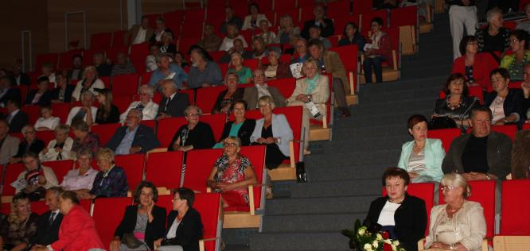
Zaczyna się część artystyczna wernisażu. Na początek z gościnnym występem Marek Stryszowski.
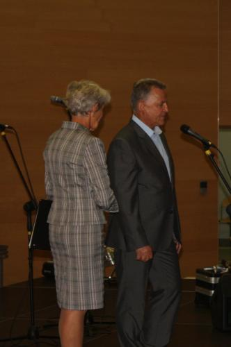 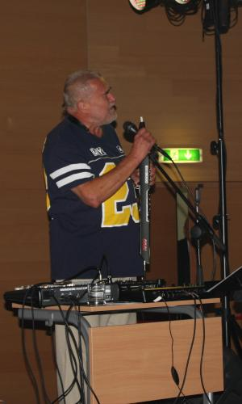
Krótkie wprowadzenie Basi o małżonku.
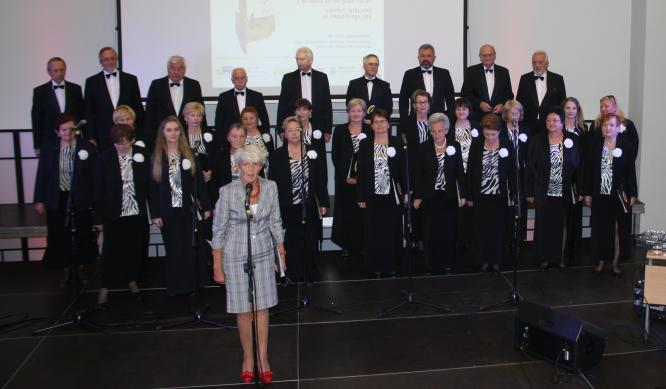
A teraz my z „wystrzałowym” koncertem dla Jubilata.
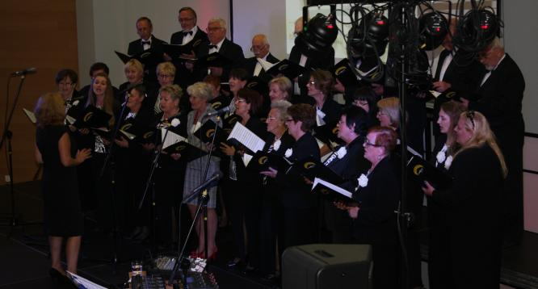 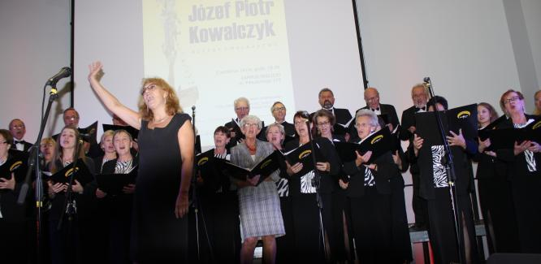
Jeszcze na koniec kwiaty dla Jubilata od Cameraty i „Przetańczyć całą noc” w wykonaniu Izabeli Szoty.
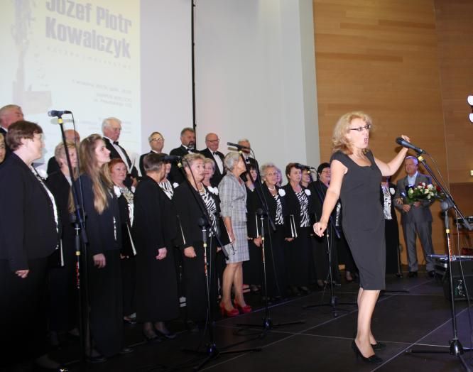
Gromkie brawa dla wykonawców oraz ...Sto lat! dla jubilata od wykonawców i całej Sali.
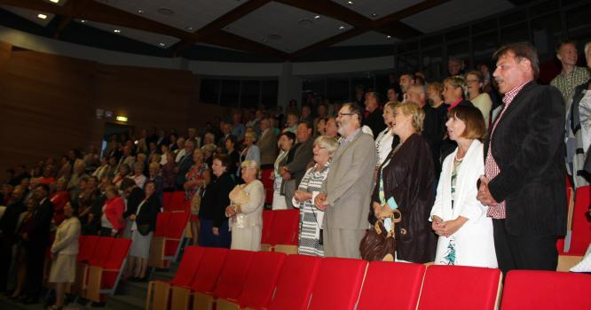
Teraz gratulacje i podziękowania za nieoceniony wkład w rozwój sztuki naszego regionu.
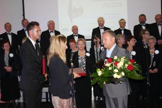 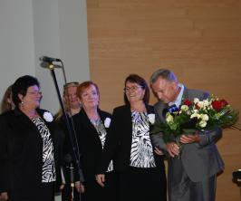
W holu kampusu wystawa, o wymownej nazwie „Jubileusze…”, jest zwieńczeniem 40-letniej działalności artystycznej twórcy.
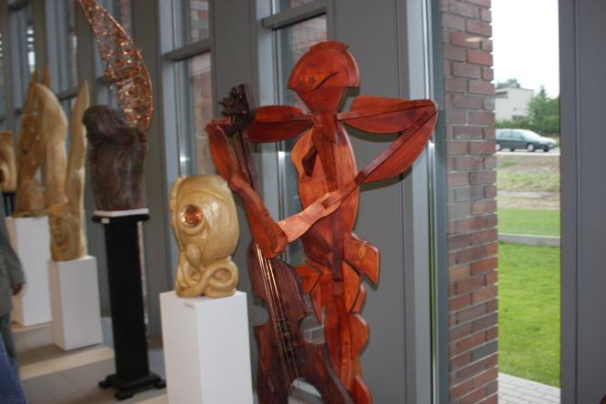

© Stowarzyszenie Muzyczne Chór Camerata Wieliczka
Projekt i wykonanie:  Prowadzenie strony: Małgorzata Wysocka-Cebula
Prowadzenie strony: Małgorzata Wysocka-Cebula